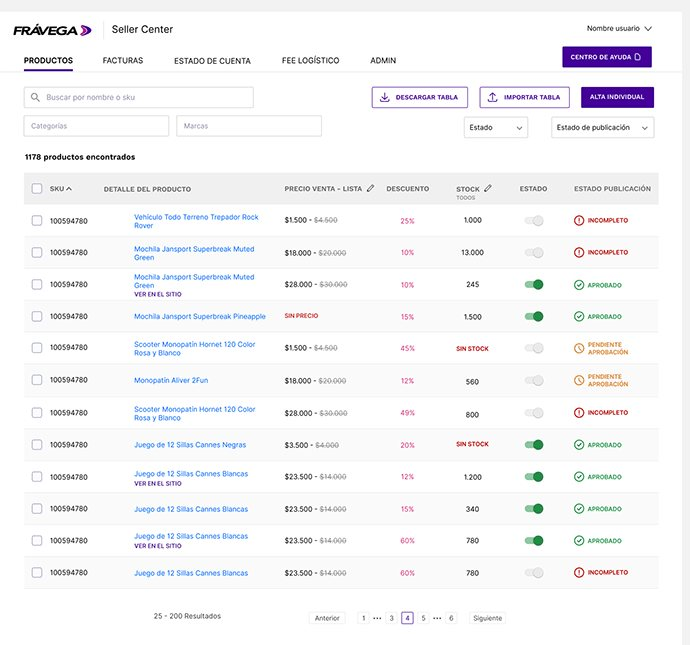

1
Publishing status always visible
The catalog shows each product's state (Incomplete, Approved, Pending approval) with search and filters by category and brand.
TradeoffA busier list, in exchange for sellers knowing at a glance what needs their attention.
